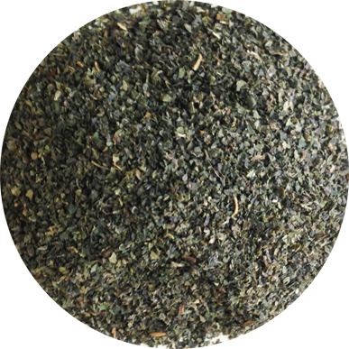
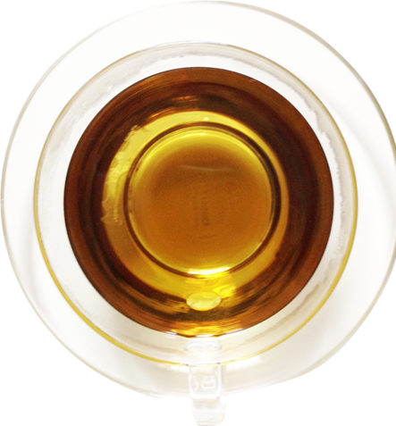

血をつくるハーブ
貧血を予防して血液の汚れをきれいにしてくれます。
ビタミンや鉄分、カルシウム、マグネシウムなど
からだに必要なミネラルを豊富に含み、
ケガから関節炎、リウマチや痛風など方にもおすすめです。
 | 和名 | 西洋イラクサ |
| 学名 | Urtica dioica |
| 科名 | イラクサ科 |
| ティに使う部分 | 葉 |
|---|---|
| 作用 | 抗アレルギー、強壮、利尿、浄血 |
| 主要成分 | フラボノイド、クロロフィル、ステロール、ビタミン、葉酸、ミネラルド |
| 注意点 | 妊娠中は避ける。 子どもへの使用は量に注意 |
| 利用法 | 化粧水として、ヘアトニックとして使用 |
| 香り | 草の香り |
|---|---|
| 味 | 甘み
 酸味
苦味
渋み
酸味
苦味
渋み
|
| ブレンドおすすめ | 花粉症予防のためのブレンドティ ネトル＋エキナセア＋エルダーフラワー |